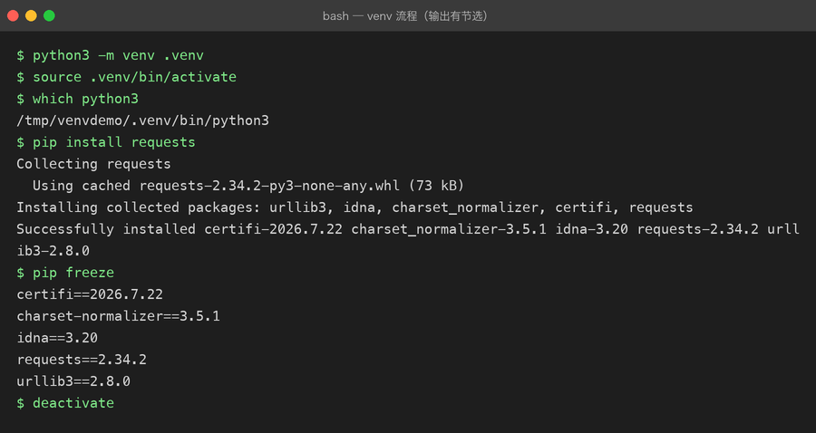
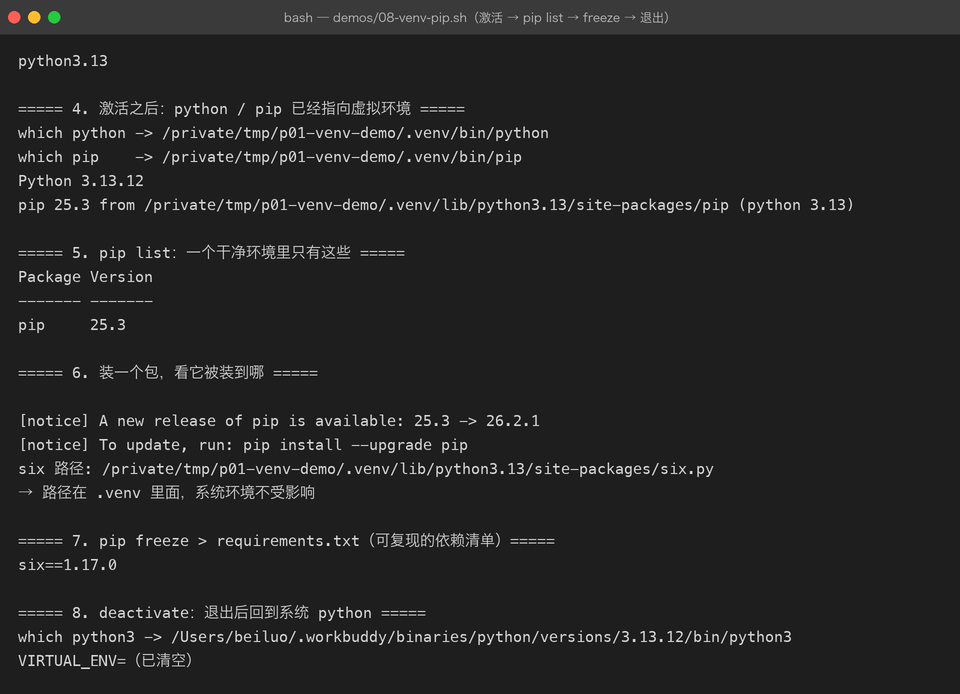

Lesson 08 — venv / pip / Environment：给 AI CLI Assistant 建立真正的 Python 开发环境
项目：Python AI CLI Assistant 版本：v0.8 核心主题：Virtual Environment【虚拟环境】、pip【Python 包管理工具】、Dependency【依赖】、Environment Variable【环境变量】、
.env配置、.gitignore
一、这一章，我们到底要解决什么问题？
现在我们的 AI CLI Assistant 已经可以：
- 接收用户输入
- 保存多轮消息
- 使用函数拆分逻辑
- 使用模块组织代码
- 捕获异常
- 把聊天记录持久化到 JSON 文件
但是它还存在一个非常明显的工程问题：
这个项目虽然能运行，但它还没有真正的“项目运行环境”。
例如：
你在自己的 Mac 上开发。
你的电脑刚好有：
Python
某些第三方库
某些环境变量
某些配置于是：
python main.py可以运行。
但是以后把项目放到另一台电脑：
Python 版本不同
第三方库没有安装
pip 安装到了另外一个 Python
环境变量不存在项目就可能直接报错。
甚至更危险的是：
你以后可能同时开发：
项目 A → 需要某个版本的库
项目 B → 需要另外一个版本的库如果所有项目共用一个 Python 环境，就容易出现：
项目 A 安装了依赖
↓
影响项目 B
↓
版本冲突
↓
程序突然无法运行所以这一章的真正任务不是“记住几个命令”。
而是：
让 AI CLI Assistant 拥有自己的独立运行环境、依赖声明和配置管理方式。
二、先看项目从 v0.7 到 v0.8 发生了什么
上一章：
v0.7
AI CLI Assistant
│
├── Python 代码
├── 聊天记录
└── messages.json现在升级：
v0.8
AI CLI Assistant
│
├── Python 代码
├── 聊天记录
├── Virtual Environment【虚拟环境】
├── Dependency【依赖】
├── requirements.txt【依赖清单】
├── Environment Variable【环境变量】
├── .env【本地配置】
└── .gitignore【Git 忽略规则】这一次，我们开始真正接触 Python 项目的“工程基础设施”。
三、第一个真实问题：Python 到底是谁？
先不要急着创建虚拟环境。
先执行：
python3 --version例如：
Python 3.12.6然后：
which python3可能得到：
/opt/homebrew/bin/python3这里实际上存在两个概念。
1. Python Interpreter【Python 解释器】
Interpreter【解释器】就是：
真正负责执行 Python 代码的程序。
当你执行：
python3 main.py本质上是：
main.py
↓
Python Interpreter
↓
执行 Python 代码可以把它简单理解成：
Java：
.java
↓
JDK / JVM
↓
执行
Python：
.py
↓
Python Interpreter
↓
执行四、第二个问题：为什么需要 Virtual Environment？
假设我们有两个项目。
项目 A
需要 package-X 1.x
项目 B
需要 package-X 2.x如果两个项目共用一个 Python 环境：
全局 Python
│
├── package-X 1.x
└── package-X 2.x很容易出现冲突。
所以 Python 提供：
Virtual Environment【虚拟环境】
它的核心思想非常简单：
每个项目拥有自己的 Python 包环境。
于是：
全局 Python
│
├── 项目 A
│ └── .venv
│ └── 自己的依赖
│
└── 项目 B
└── .venv
└── 自己的依赖项目之间彼此隔离。
五、创建 AI CLI Assistant 的虚拟环境
先进入项目：
cd projects/01-python-ai-cli创建：
python3 -m venv .venv这里非常值得理解。
不是简单记：
venv而是：
python3 -m venv .venv拆开来看：
python3
↓
使用当前 Python 解释器
-m
↓
运行一个 Python 模块
venv
↓
Python 官方提供的虚拟环境模块
.venv
↓
创建出来的虚拟环境目录最终：
projects/01-python-ai-cli/
├── .venv/
├── src/
├── messages.json
└── ...下面是完整的创建 → 激活 → 装依赖 → 导出 → 退出流程实测（输出有节选）：


六、为什么目录叫 .venv？
.venv 中的：
.表示它通常被当作隐藏目录。
venv 表示：
Virtual Environment【虚拟环境】所以：
.venv只是一个非常常见的命名习惯。
也可以叫：
venv
python-env
myenv但实际项目里：
.venv非常常见，也容易让开发工具识别。
七、激活虚拟环境
Mac / Linux：
source .venv/bin/activate成功后终端前面可能出现：
(.venv) beiluo@MacBook ...这说明：
当前终端已经进入项目自己的虚拟环境。
现在再执行：
python --version以及：
which python你会发现 Python 路径发生变化。
例如：
.../projects/01-python-ai-cli/.venv/bin/python这就是非常关键的变化。
八、这里发生了什么？
原来：
终端
↓
系统 Python
↓
执行项目现在：
终端
↓
激活 .venv
↓
项目自己的 Python 环境
↓
执行项目所以以后在这个项目里：
python指向的是当前项目的虚拟环境。
九、退出虚拟环境
执行：
deactivate然后：
which python3就会回到系统 Python。
所以可以把：
source .venv/bin/activate理解成：
进入项目的 Python 开发环境。
把：
deactivate理解成：
离开项目的 Python 开发环境。
十、Virtual Environment 到底隔离了什么？
一个非常重要的理解：
.venv主要解决的是 Python 解释器和 Python 包依赖的隔离问题。
它并不是：
Docker也不是：
虚拟机更不是：
它主要解决：
Python 项目
↓
独立 Python 包环境例如：
项目 A
.venv
├── requests
├── python-dotenv
└── ...
项目 B
.venv
├── fastapi
├── torch
└── ...十一、第二个核心问题：什么是 Dependency？
现在我们的项目准备开始使用第三方库。
例如下一步我们会让 AI CLI Assistant 读取：
.env而 .env 的读取，我们可以使用：
python-dotenv这个库。
这时候出现一个新的概念：
Dependency【依赖】
Dependency 的意思是：
项目运行所依赖的外部软件包或组件。
比如：
AI CLI Assistant
│
├── Python
├── python-dotenv
└── 未来的 HTTP Client【HTTP 客户端】这些都是项目运行时可能需要的东西。
十二、第三个核心问题：什么是 pip？
pip【Python 包安装工具】
它主要负责：
安装
升级
卸载
查看
管理Python 第三方包。
例如：
python -m pip install python-dotenv这里我特别推荐你先形成这个习惯：
python -m pip而不是到处使用：
pip为什么？
因为：
python -m pip明确表示：
使用当前这个 Python 解释器对应的 pip。
这样更容易避免：
python 是 A
pip 却来自 B这种非常常见的环境问题。
十三、安装第一个第三方依赖
进入虚拟环境：
source .venv/bin/activate执行：
python -m pip install python-dotenv安装完成后：
python -m pip show python-dotenv可以查看安装信息。
也可以：
python -m pip list查看当前环境里的包。
十四、项目现在有什么变化？
之前：
Python 自带功能现在：
Python
↓
虚拟环境
↓
第三方依赖
↓
python-dotenv所以项目第一次真正具备了：
环境
+
依赖十五、为什么不能直接把整个 .venv 提交到 Git？
假设：
git add .如果没有配置忽略规则，Git 可能把：
.venv/也纳入版本控制。
这是不合理的。
原因很简单：
.venv 是：
本地环境产物
而不是：
项目源码本身。
你真正应该提交的是：
项目源码
+
依赖声明
+
配置模板而不是：
整个本机 Python 环境十六、加入 .gitignore
项目根目录创建：
.gitignore内容：
.venv/
.env
__pycache__/
*.pyc十七、每一行是什么意思？
.venv/
表示：
不提交 Python 虚拟环境。
.env
表示：
不提交本地敏感配置。
这个尤其重要。
因为以后我们很可能会出现：
OPENAI_API_KEY=xxxx或者：
DASHSCOPE_API_KEY=xxxxAPI Key【应用程序编程接口密钥】属于敏感凭证。
不能直接提交到 GitHub。
__pycache__/
Python 运行过程中可能产生：
__pycache__里面主要是缓存相关文件。
通常也不需要提交。
*.pyc
Python 字节码缓存文件。
同样属于运行产物。
十八、但是别人怎么知道需要安装什么？
这就引出了新的问题。
我们不提交：
.venv那么别人拿到项目之后：
git clone怎么知道需要：
python-dotenv？
答案：
requirements.txt
十九、requirements.txt 是什么？
它本质上就是：
项目依赖清单。
可以理解为：
这个项目需要哪些 Python 包？例如：
python-dotenv于是其他人拿到代码之后：
python -m pip install -r requirements.txtPython 就可以根据这个文件安装依赖。
二十、让 pip 自动生成 requirements.txt
不要手工猜版本。
在当前虚拟环境中执行：
python -m pip freeze > requirements.txt于是得到：
requirements.txt文件内容会根据你当前环境中的真实安装结果生成。
可能类似：
python-dotenv==某个版本注意：
不要在教程里手写一个你没有验证过的版本号。
最可靠的方法是：
python -m pip freeze > requirements.txt让当前环境产生真实结果。
二十一、别人拿到项目后怎么恢复环境？
整个流程：
Git 仓库
│
├── source code
├── requirements.txt
└── .gitignore别人 clone 后：
git clone ...
cd projects/01-python-ai-cli创建环境：
python3 -m venv .venv激活：
source .venv/bin/activate安装依赖：
python -m pip install -r requirements.txt于是：
代码
+
虚拟环境
+
依赖安装基本就恢复起来了。
二十二、这就是“可复现环境”
Reproducibility【可复现性】
所谓可复现，简单理解就是：
别人可以根据项目中的代码和依赖声明，重新建立一个足够接近的运行环境。
这会成为 AI 工程中非常重要的概念。
尤其以后你会遇到：
PyTorch
Transformers
CUDA
vLLM
LangChain
Embedding
RAG这些项目的依赖越来越复杂。
所以：
Python 环境管理不是“小知识”，而是 AI 工程的地基。
二十三、现在开始第二个工程问题：配置放在哪里？
我们的 AI CLI Assistant 以后肯定会需要：
模型名称
API 地址
API Key
超时时间例如：
MODEL_NAME
BASE_URL
API_KEY但是这些信息有不同性质。
比如：
模型名称通常可以公开。
而：
API Key属于敏感信息。
所以：
代码和配置需要分离。
二十四、什么是 Environment Variable？
Environment Variable【环境变量】
简单理解：
由运行环境提供给程序读取的配置值。
例如：
export MODEL_NAME="demo-model"Python：
import os
model_name = os.getenv("MODEL_NAME")
print(model_name)程序就可以读取：
MODEL_NAME二十五、为什么 AI 项目特别需要环境变量？
因为 AI 项目经常存在：
API Key
API URL
Model Name
Database URL
Vector DB 配置这些配置在不同环境下可能不同。
例如：
本地开发
↓
开发环境
↓
测试环境
↓
生产环境代码不应该因为：
API Key不同而不断修改。
所以更合理的是：
代码
+
环境变量二十六、先用 Python 原生方式读取环境变量
代码：
import os
api_key = os.getenv("API_KEY")
print(api_key)但这里存在一个问题：
如果你直接：
export API_KEY="xxxx"终端里的配置虽然有效，但不方便管理。
于是我们引入：
.env
二十七、什么是 .env？
.env 是一个非常常见的：
本地环境配置文件
例如：
API_KEY=your-local-key
MODEL_NAME=demo-model
BASE_URL=https://example.com然后 Python 程序读取它。
注意：
.env只是配置文件格式和使用习惯，不是 Python 官方特殊语言。
二十八、为什么需要 python-dotenv？
Python 标准库中的：
os.getenv()可以读取真正的环境变量。
而：
python-dotenv可以帮助你把：
.env里的配置加载进环境变量。
于是：
.env
↓
python-dotenv
↓
Environment Variables
↓
os.getenv()
↓
Python 程序二十九、创建 .env
项目根目录：
projects/01-python-ai-cli/
├── .env
├── .gitignore
├── requirements.txt
└── src/.env：
APP_NAME=Python AI CLI Assistant
MODEL_NAME=demo-model这里没有放真实密钥。
三十、在代码中读取 .env
例如修改：
src/ai_cli/config.py代码：
import os
from dotenv import load_dotenv
load_dotenv()
APP_NAME = os.getenv("APP_NAME", "Python AI CLI Assistant")
MODEL_NAME = os.getenv("MODEL_NAME", "demo-model")这里出现一个新的写法：
os.getenv("MODEL_NAME", "demo-model")意思是：
读取 MODEL_NAME
│
├── 有值
│ ↓
│ 使用它
│
└── 没有值
↓
使用默认值
demo-model三十一、为什么要提供默认值？
因为程序不能总是假设：
配置一定存在例如：
MODEL_NAME = os.getenv("MODEL_NAME", "demo-model")相当于：
如果环境变量没有配置，就先使用一个默认模型名称。
这叫：
Default Value【默认值】
它可以提升程序的容错性。
三十二、创建 .env.example
这里有一个非常重要的工程实践。
我们不能提交：
.env但是别人需要知道：
项目需要哪些配置？
所以创建：
.env.example内容：
APP_NAME=Python AI CLI Assistant
MODEL_NAME=demo-model
API_KEY=
BASE_URL=三十三、.env.example 和 .env 的关系
它们的关系可以理解为：
.env.example
↓
配置模板
↓
开发者复制
↓
.env
↓
填入自己的真实配置所以：
.env.example可以提交。
而：
.env不要提交。
三十四、为什么这套方式特别适合 AI 项目？
以后你真的接入大模型时：
.env.example
API_KEY=
MODEL_NAME=
BASE_URL=每个开发者：
复制 .env.example
↓
生成 .env
↓
填写自己的 Key
↓
程序读取于是：
源码
≠
秘密这是一条非常重要的工程原则。
三十五、安全原则：千万不要这样做
不要：
API_KEY = "sk-xxxxxxxxxx"更不要：
print(API_KEY)然后把日志提交进 Git。
更不要：
README.md里面直接写真实 Key。
也不要：
git add .
git commit
git push之前忘记检查：
.env三十六、现在重构 config.py
可以调整成：
import os
from dotenv import load_dotenv
load_dotenv()
APP_NAME = os.getenv(
"APP_NAME",
"Python AI CLI Assistant",
)
MODEL_NAME = os.getenv(
"MODEL_NAME",
"demo-model",
)
API_KEY = os.getenv("API_KEY")
BASE_URL = os.getenv("BASE_URL")这一阶段：
API_KEY可以为空。
因为我们还没有真正调用远程 AI API。
我们这里只是提前把：
配置管理能力建立起来。
真正的 HTTP / API 调用会放到下一阶段。
三十七、为什么现在不急着接真实大模型？
因为如果现在直接：
Python
↓
HTTP
↓
API
↓
LLM你会同时遇到：
环境
依赖
网络请求
认证
JSON
HTTP 状态码
超时
异常
API 响应
消息格式这样会把太多知识一次堆起来。
现在我们先完成：
Python 项目基础设施下一章再解决：
Python
↓
HTTP
↓
API再之后：
HTTP API
↓
真实 LLM学习链路会更加稳定。
三十八、项目结构升级到 v0.8
现在项目可以整理成：
projects/01-python-ai-cli/
│
├── .venv/
│
├── .env
├── .env.example
├── .gitignore
├── requirements.txt
├── messages.json
│
└── src/
└── ai_cli/
├── __init__.py
├── main.py
├── config.py
├── conversation.py
├── assistant.py
├── formatter.py
└── storage.py其中：
.venv/本地环境。
.env本地配置。
.env.example配置模板。
requirements.txt依赖声明。
src/源代码。
三十九、把整个项目的职责重新梳理一遍
main.py
负责：
程序入口
程序主流程config.py
负责：
项目配置
环境变量
.envconversation.py
负责：
聊天记录
消息添加
历史查询
清空assistant.py
负责：
Assistant 行为目前还是：
Mock Response【模拟响应】formatter.py
负责：
输出格式storage.py
负责：
JSON 持久化四十、现在形成了一个非常重要的工程分层
main.py
│
├── config.py
│ └── 环境 / 配置
│
├── conversation.py
│ └── 消息管理
│
├── assistant.py
│ └── AI 行为
│
├── formatter.py
│ └── 输出
│
└── storage.py
└── 文件持久化而项目之外：
.venv
↓
运行环境
requirements.txt
↓
依赖声明
.env
↓
本地配置
.env.example
↓
配置模板
.gitignore
↓
版本控制边界四十一、联系描述：这一章的真正知识链路
不要把这一章记成：
venv
pip
dotenv
requirements而应该把它理解成一整条工程链：
Python 项目
↓
需要独立运行环境
↓
Virtual Environment【虚拟环境】
↓
项目可以独立安装第三方依赖
↓
pip 安装 Dependency【依赖】
↓
requirements.txt 记录依赖
↓
别人可以根据清单恢复环境
↓
项目又需要不同机器使用不同配置
↓
Environment Variable【环境变量】
↓
.env 提供本地配置
↓
python-dotenv 加载配置
↓
config.py 统一读取
↓
.gitignore 防止环境和秘密进入 Git路线描述
第一步，我们发现不同 Python 项目不能安全地共用一个依赖环境，所以创建 .venv，把项目的 Python 运行环境隔离出来。
第二步，项目开始使用第三方库，于是通过 pip 安装依赖。
第三步，别人不能直接拿走我们的 .venv，所以项目必须把“自己需要什么”记录下来，于是使用 requirements.txt 描述依赖。
第四步，项目开始需要模型名称、API Key、Base URL 等配置。这些值不应该直接写死在代码里，因此引入环境变量。
第五步，为了方便本地开发，用 .env 保存本地配置，再通过 python-dotenv 加载。
第六步，.env 和 .venv 都属于本机环境或敏感数据，不能进入 Git，因此通过 .gitignore 把它们排除。
所以这一章真正建立的是：
代码、依赖、环境、配置、秘密之间的边界。
四十二、Java 开发者怎么理解这套东西？
你已经有 Java 开发经验，所以可以直接类比。
| Python | Java 中可以类比理解 |
|---|---|
| Python Interpreter【解释器】 | JDK/JVM 运行体系 |
| venv | 项目独立运行环境 |
| pip | Maven / Gradle 依赖管理 |
| requirements.txt | pom.xml / build.gradle 中的依赖声明 |
.env | 本地配置 |
| Environment Variable | 环境变量 |
| config.py | 配置读取类 |
.gitignore | Git 忽略构建产物 / 本地文件 |
但不要把它们理解成完全等价。
例如：
venv ≠ Maven更准确的理解是：
venv
→ Python 环境隔离
pip
→ Python 包安装与管理而：
Maven / Gradle
→ Java 项目的依赖 + 构建体系四十三、一个非常重要的区别：代码 ≠ 环境 ≠ 配置
到这里应该开始形成三层思维。
代码
│
├── main.py
├── assistant.py
└── storage.py
环境
│
└── .venv
配置
│
├── .env
└── Environment Variables再加：
依赖
│
└── requirements.txt所以完整模型：
项目
│
├── Code【代码】
├── Dependency【依赖】
├── Runtime Environment【运行环境】
└── Configuration【配置】这是以后学习：
FastAPI
PyTorch
Transformers
RAG
Agent
vLLM
Docker都会反复出现的思维模型。
四十四、Demo：验证配置是否成功加载
创建：
src/ai_cli/config_demo.py代码：
import os
from dotenv import load_dotenv
load_dotenv()
app_name = os.getenv(
"APP_NAME",
"Python AI CLI Assistant",
)
model_name = os.getenv(
"MODEL_NAME",
"demo-model",
)
print(f"APP_NAME={app_name}")
print(f"MODEL_NAME={model_name}")运行后：
APP_NAME=Python AI CLI Assistant
MODEL_NAME=demo-model这样你就完成了一次完整链路：
.env
↓
python-dotenv
↓
os.getenv()
↓
Python 变量
↓
程序使用四十五、Demo：验证 requirements.txt
先查看：
cat requirements.txt然后创建一个新的虚拟环境。
例如：
python3 -m venv .venv-test激活：
source .venv-test/bin/activate然后：
python -m pip install -r requirements.txt再运行：
python -m pip list你应该能看到项目需要的依赖。
测试完成之后：
deactivate然后删除测试环境：
rm -rf .venv-test这个实验很重要。
因为你不再只是：
“我知道 requirements.txt 是干什么的。”
而是真正验证了：
项目可以从依赖清单重建环境。
四十六、这一章不要陷入一个误区
很多初学者会认为：
Python 环境
=
下载 Python不是。
Python 项目环境实际上至少包含：
Python Interpreter
+
Python Packages
+
Environment Variables
+
Project Configuration所以：
Python 装好了不代表：
Python 项目环境就完整了四十七、项目 v0.8 的完整运行链
最终：
启动终端
↓
进入项目目录
↓
source .venv/bin/activate
↓
项目进入独立 Python 环境
↓
读取 requirements.txt 中已安装的依赖
↓
python-dotenv 加载 .env
↓
config.py 读取配置
↓
main.py 启动
↓
AI CLI Assistant 运行四十八、v0.8 完成后的项目能力
现在我们的 AI CLI Assistant 已经具备：
程序能力
输入
↓
命令
↓
聊天
↓
历史
↓
清空
↓
异常处理
↓
持久化工程能力
模块化
↓
依赖管理
↓
虚拟环境
↓
环境配置
↓
敏感配置隔离
↓
可复现环境这意味着：
我们已经从“Python 学习脚本”逐渐进入“真正的 Python 项目”。
四十九、主动回忆训练
现在不要马上看下面的答案。
先自己回答。
问题 1
为什么 Python 项目需要 Virtual Environment【虚拟环境】？
问题 2
python3 -m venv .venv这条命令具体做了什么？
问题 3
为什么推荐：
python -m pip install xxx而不是无脑：
pip install xxx问题 4
Dependency【依赖】是什么意思？
问题 5
.venv 和 requirements.txt 分别解决什么问题？
问题 6
为什么不能把 .venv 提交到 Git？
问题 7
为什么 .env 不应该提交到 GitHub？
问题 8
.env 和 .env.example 有什么区别？
问题 9
下面代码：
os.getenv("MODEL_NAME", "demo-model")第二个参数有什么作用？
问题 10
请你完整描述：
.env
→ python-dotenv
→ os.getenv()
→ config.py
→ main.py这一条链路。
五十、面试标准话术
这一章已经开始出现非常典型的 Python 工程面试问题。
题目：为什么 Python 项目需要虚拟环境？
标准回答
Python 项目使用虚拟环境主要是为了隔离不同项目之间的 Python 解释器和第三方依赖。因为不同项目可能依赖不同版本的包，如果共用全局环境，容易产生版本冲突。通过
venv可以为每个项目创建独立环境，项目之间互不影响。
题目：requirements.txt 是干什么的？
标准回答
requirements.txt用于记录项目所依赖的 Python 包及其版本信息。它本身不是运行环境，而是依赖声明文件。其他开发者拿到项目之后，可以通过pip install -r requirements.txt安装这些依赖，从而恢复项目所需的 Python 包环境。
题目：为什么 API Key 不应该写死在代码里？
标准回答
因为 API Key 属于敏感凭证，直接写在源码里容易被提交到 Git 仓库，造成泄露。同时不同环境的配置通常不同，所以更合理的方式是通过环境变量或者
.env等配置方式注入，代码只负责读取配置，不直接保存敏感信息。
题目：.env 和环境变量是什么关系？
标准回答
环境变量是操作系统运行环境提供给程序的配置值，而
.env是开发阶段常用的本地配置文件。像python-dotenv这样的工具可以把.env中的配置加载到环境变量中，然后程序通过os.getenv()统一读取。
五十一、代码挑战
现在给 AI CLI Assistant 增加一个新的配置命令：
/config用户输入：
/config输出：
APP_NAME: Python AI CLI Assistant
MODEL_NAME: demo-model要求：
- 配置从
.env读取。
- 不能把配置值写死在
main.py。
config.py负责配置管理。
main.py只负责流程控制。
- API Key 不允许打印出来。
五十二、进一步挑战：环境切换
假设：
.env是：
MODEL_NAME=local-model而开发环境可能是：
MODEL_NAME=cloud-model要求你的代码：
完全不修改只改变配置，就可以切换模型名称。
最终应该形成：
代码不变
│
├── 本地配置
│ ↓
│ local-model
│
└── 其他环境
↓
cloud-model这就是：
Configuration Separation【配置与代码分离】
五十三、本章知识地图
Python Project【Python 项目】
│
├── Interpreter【解释器】
│
├── Virtual Environment【虚拟环境】
│ │
│ └── .venv
│
├── Dependency【依赖】
│ │
│ └── pip
│
├── Dependency Declaration【依赖声明】
│ │
│ └── requirements.txt
│
├── Configuration【配置】
│ │
│ ├── Environment Variable【环境变量】
│ └── .env
│
├── Configuration Loader【配置加载】
│ │
│ └── python-dotenv
│
└── Version Control Boundary【版本控制边界】
│
└── .gitignore五十四、这一章与前七章怎么连接？
整个 Python AI CLI Assistant 的学习链已经开始形成。
Lesson 01
变量 / 类型 / 输入输出
↓
Lesson 02
List / Dict / JSON / Messages
↓
Lesson 03
Condition / Loop
↓
Lesson 04
Function
↓
Lesson 05
Module / Package
↓
Lesson 06
Exception / Validation
↓
Lesson 07
File / JSON / Persistence
↓
Lesson 08
venv / pip / Environment联系描述：
第一阶段解决的是：
Python 能不能表达数据？
所以学习变量、类型、List、Dict、JSON。
第二阶段解决：
程序能不能运行？
所以学习条件、循环、函数。
第三阶段解决：
代码能不能维护？
所以学习模块、包、异常。
第四阶段解决：
数据能不能保存？
所以学习文件和 JSON 持久化。
第五阶段解决：
这个程序能不能成为真正可维护、可复现的 Python 项目？
所以学习：
venv
pip
requirements
environment variables
.env
.gitignore这就是整个学习路线为什么要按照项目需求推进，而不是把 Python 语法一次性背完。
五十五、项目版本进度
现在：
v0.1 ✅ Input / Output
v0.2 ✅ List / Dict / JSON / Messages
v0.3 ✅ Condition / Loop
v0.4 ✅ Function
v0.5 ✅ Module / Package
v0.6 ✅ Exception / Validation
v0.7 ✅ File / JSON Persistence
v0.8 ✅ venv / pip / Environment
v0.9 ⏭ HTTP / API
v1.0 ⏭ Real LLM CLI Assistant五十六、下一章：Lesson 09
下一章正式解决一个非常关键的问题：
Python 程序到底怎么和外部服务通信？
也就是：
Lesson 09 — HTTP / API：让 AI CLI Assistant 第一次真正调用外部服务
届时会开始进入：
HTTP【超文本传输协议】
Request【请求】
Response【响应】
GET / POST
Status Code【状态码】
Headers【请求头】
JSON Request
JSON Response
Timeout【超时】
API Endpoint【接口地址】项目路线会从：
Mock Assistant第一次升级为：
Python
↓
HTTP Request
↓
External API
↓
HTTP Response
↓
Python而这一步完成后，我们距离：
Python
↓
真实 LLM API
↓
AI CLI Assistant就只差最后一层。